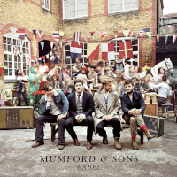

Me gusta escuchar música de diferentes géneros, generalmente, por recomendación de mis amigos muchas veces, así haciendo que escuche música bastante variada y no haya ningún género que prevalezca sobre el resto. Dentro de los géneros que escucho encontraremos:
Pop
Dancepop
Kpop
Rock
EDM
Instrumentales
Bandas sonoras
Hardrock
Jpop
Country
Aun así, si que es cierto que últimamente, con el auge del kpop sí que escucho más canciones de este género músical.
A continuación, oíremos unas de mis canciones favoritas actualmente:
Carátula
Título
Lanzamiento
Artista
Audio
VIVID WORLD
2021
Miyu Kubota
Dirty Deeds Done Dirt Cheap
1976
AC/DC

I Will Wait
2012
Mumford & Sons
Pantomime
2020
WJSN
CONCURSOS MUSICALES
También me gustan bastante los concursos musicales, tanto sean de aquí de España como de otras regiones del mundo, ya tengan un factor más reality o sea puramente canciones donde se valora en el momento. Entre estos se encuentran programas como:
La Voz
Operación Triunfo
Queendom 2
Además, también me gustan series y películas que contengan bastantes números musicales y canciones, como pueden ser La Cenicienta (2021), La La Land, Bohemian Rhapsody y Yesterday
Por último, se incluye uno de mis números favoritos pertecientes al concurso coreano Queendom 2 donde grupos conocidos pero no famosos competían por ser el mejor.